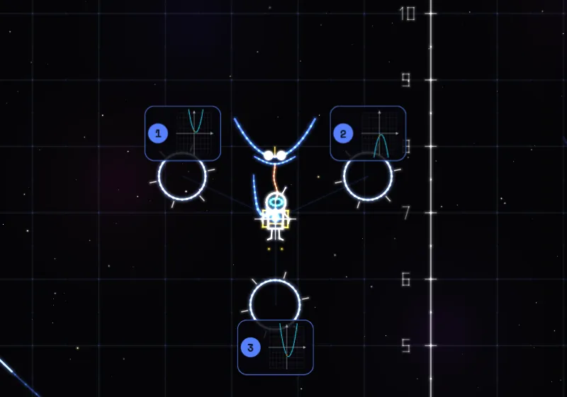

AstroMath: in volo tra le costellazioni della matematica
Un gioco di esplorazione sul piano cartesiano: ogni stella ha una creatura con una domanda, e si risponde volando attraverso l'anello giusto.
Bozza: non ancora pubblicata.
Cosa è
AstroMath è un gioco di volo sul piano cartesiano. Si guida un piccolo pilota con lo zaino a razzo tra dodici costellazioni, in ordine di programma: numeri, percentuali e proporzioni, calcolo letterale, prodotti notevoli, scomposizioni, equazioni, rette, geometria, dati, radicali e secondo grado, parabola, e infine l'officina.
Ogni costellazione ha sei stelle. Avvicinandosi a una stella compare la sua creatura, disegnata con la matematica del suo argomento: la Manta parabolica ha le ali a forma di $y = ax^2$, la Squadra 3-4-5 apre i quadrati sui lati, il Quadrato del binomio si scompone in $a^2$, $2ab$ e $b^2$. La creatura fa una domanda, presa dai generatori della Quest, e attorno alla stella si aprono gli anelli delle risposte: si risponde volandoci attraverso, oppure toccando la risposta.
Non c'è un timer. Dopo due errori arrivano la spiegazione e un problema gemello con numeri nuovi. Quando tutte le stelle sono accese, la costellazione si disegna e in alto si apre il portale per la successiva. Ci sono anche le correnti: grafici di funzione con la loro formula scritta accanto, che portano chi li segue.

L'idea matematica
Il cielo è un piano cartesiano vero, con gli assi numerati: ogni quadretto vale una unità. Le correnti sono funzioni, e la formula si controlla con gli occhi. Sulla corrente $y = \dfrac{1}{2}x + 2$, per $x = 4$ il pilota passa a quota $\dfrac{1}{2}\cdot 4 + 2 = 4$: basta guardare la griglia per verificarlo.
Per prepararti alla verifica
- Ogni costellazione corrisponde a un argomento: completa quella della verifica senza usare il suggerimento.
- Alla fine trovi le lezioni della Quest su cui hai sbagliato in volo: parti da quelle.
- Attenzione: tra le risposte sbagliate ci sono gli errori più comuni, come dimenticare il doppio prodotto in $(a+b)^2$. Se una risposta "sembra quasi giusta", rifai il conto.
Prova tu. La parabola $y = (x - 2)(x - 4)$ taglia l'asse $x$ in $2$ e in $4$. Dove si trova il vertice?
Soluzione
Il vertice sta a metà tra gli zeri: $x_V = \dfrac{2 + 4}{2} = 3$. Sostituendo, $y_V = (3 - 2)(3 - 4) = 1 \cdot (-1) = -1$. Il vertice è $V(3;\,-1)$.
Mettiti alla prova su carta
Verifiche dell'Archivio con esercizi sugli stessi temi. Prova a farle con carta e penna, senza l'app: è lì che si vede se hai capito.
- Verifica di maggio 2026: Proprietà delle potenze, Frazioni e percentuali, Proporzioni in elettrotecnica… Apri il PDF
- Verifica di dicembre 2025: Equazioni di primo grado, Equazioni con prodotti notevoli… Fila A · Fila B
- Verifica di maggio 2026: Piano cartesiano, Distanza fra due punti, Punto medio, Equazione della retta in forma esplicita, Equazioni… Apri il PDF
Come usarla in classe
Proposta d'uso: alla LIM una persona pilota e la classe sceglie l'anello a voce, poi si controlla insieme la spiegazione. Sui telefoni si può far partire la stessa costellazione per tutti con lo stesso seme (?seme= nell'indirizzo), così le domande sono uguali e se ne discute dopo. Chi usa la Quest sullo stesso telefono trova d'oro le stelle già conquistate. Per allenarsi: Numeri relativi, Percentuali, Prodotti notevoli, Equazioni di primo grado, Pendenza di una retta, Il teorema di Pitagora, Statistica, La parabola.
A cosa fare attenzione
- Volare non è rispondere: conviene fermarsi accanto alla stella, che tiene sospeso il pilota, e fare il conto prima di muoversi verso un anello.
- Il suggerimento toglie il bonus "a mente" ma non toglie punti: va usato senza paura quando serve.